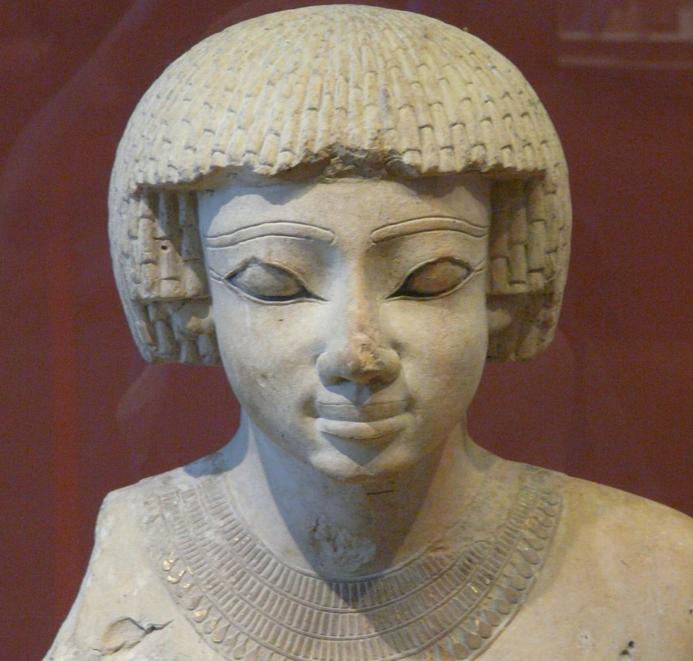
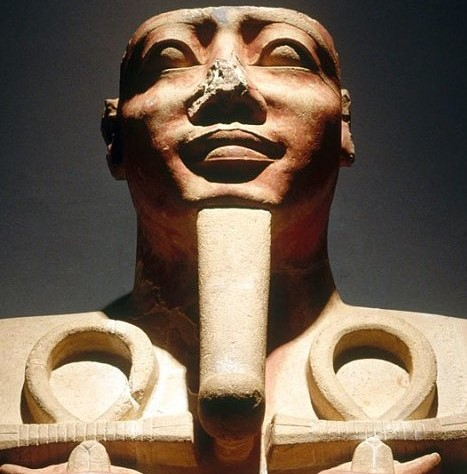

DJOSER
Fondatorul Vechiului Regat, Djoser, a fost unul dintre membrii celei de a noua dinastii.A domnit între 2630 și 2611 înaintea erei noastre și este cunoscut pentru construirea faimoasei piramide din trepte de calcar la Saqqara, ce a fost făcută pentru a proteja mormântul faraonului. Pietrele au inscripții gravate pe ele, iar clădirea este un exemplu excelent al unei forme inteligente de arhitectură care nu și-a pierdut stabilitatea în ciuda înălțimii sale. Istoricii explică faptul că structura a fost finalizată după moartea lui Djoser de către, Imhotep, un mare preot.
PEPI AL II-LEA
Cea mai lunga domnie in Egiptul antic este considerata cea a lui Pepi al II-lea. Pepi si-ar fi inceput domnia la 6 ani si ar fi murit la 1oo de ani. Varsta la care a murit ar confirma unele scrieri egiptene care dadeau varsta de 110 ani ca varsta ideala de viata pentru vechii egipteni. In timpul sau se instituie cultul mortuar, prin decretele de la Abydos, Coptos si Saqqara. Acestea stipulau numirea de personal specializat pentru organizarea funeraliilor si scutirea unor temple de impozite si taxe. Complexul sau mortuar se gaseste la Saqqara.
HATSHEPSUT
Hatshepsut a fost cea mai de succes femeie care a urcat pe tronul Egiptului. Ea a fost cel de al cincilea faraon al dinastiei a XVIII-a a Egiptului. A domnit între 1478 și 1458 înaintea erei noastre.După moartea soțului ei, Hatshepsut a preluat tronul și a domnit peste 21 de ani.Ea a realizat mult mai mult decât mulți alți faraoni în timpul domniei lor.De la inițierea nenumăratelor proiecte de construcție până la stabilirea rutelor pentru comerțul exterior, totul a fost realizat fără probleme, iar oamenii s-au bucurat de pace sub conducerea ei.
TUTANKHAMON
Cel mai faimos faraon din toate timpurile, el a urcat pe tron la vârsta fragedă de nouă sau zece ani, iar domnia sa a durat din 1332 până în 1323 înaintea erei noastre. Deși tânărul rege a introdus multe reforme religioase, menite să le înlocuiască pe cele implementate de tatăl său, el nu a fost aclamat pentru realizările sale ca conducător. Moartea sa este încă o chestiune de controversă, deoarece nu s-au tras concluzii cu privire la modul în care a murit, dar mumia sa inca este deosebit de importantă pentru egiptologi.
RAMSES AL II-LEA
Ramses II a fost al treilea faraon din dinastia a XIX-a și unul dintre cei mai mari faraoni ai Noului Regat al Egiptului.Se spune că Ramses al II-lea a avut o carieră militară victorioasă care a adus beneficii politice și economice regatului său.Niciun faraon nu i-a depășit vreodată triumfurile arhitecturale, în timpul domniei sale fiind construite un număr mare de monumente, fiind o parte importantă a patrimoniului egiptean. A murit la vârsta de 90 de ani și a fost îngropat în Valea Regilor.
CLEOPATRA
Cleopatra a VII-a sau Cleopatra Philopator a fost ultimul faraon al Regatului Ptolemeic și fiica generalului macedonean Ptolemeu I Soter. Relațiile sale externe, atât personale, cât și politice, s-au dovedit a fi de o mare valoare pentru regat și au condus la comerț exterior mult mai prosper.După moartea Cleopatrei, Imperiul Egiptean a luat sfârșit, fiind încorporat în Imperiul Roman. A fost un conducător remarcabil, dar la 39 de ani s-a sinucis, evenimentul fiind, în continuare, sursă de controverse.
AHMOSE I
Ahmose I (nascut din Zeul Lunii) a intemeiat Dinastia a XVIII-a . El a cucerit Delta Nilului de la hicsosi, a restaurat domnia Tebei asupra Egiptului si a recucerit Canaan si Nubia. Ahmose a reorganizat administratia tarii, a dezvoltat comertul, a redeschis cariere de piatra si mine si a lansat ample proiecte de constructii.

NEFERTITI
Regină a Egiptului din Dinastia a 18-a, "Marea soţie" a faraonului Amenhotep al IV-lea, zis şi Akhenaten. Ea a domnit aproximativ între 1379-1361 î.Hr., în vremea marii reforme religioase care a promovat cultul unic al discului solar, Aten. Ea a fost şi soacra şi, se pare, şi mama vitregă a faraonului Tutankhamon.
SENUSRET I
Senusret I a fost unul dintre cei mai cruzi faraoni. El a masacrat populatiile care migrau din zona Asiei si a cucerit Palestina, Nubia si Libia. Intre 1971-1926 acesta a continut politicile expansioniste ale tatalui sau, a stabilit frontiera sudica langa a doua cataracta si a stabilit relatii diplomatice cu Siria si Canaan.
